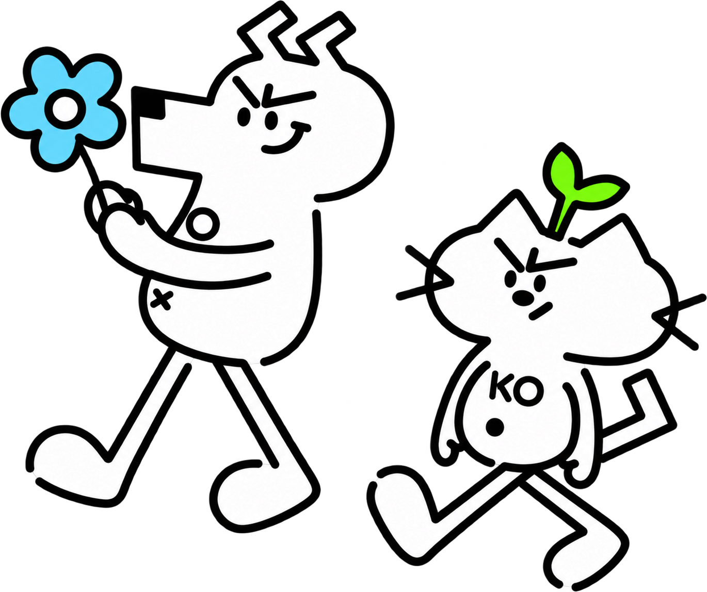
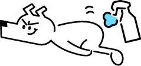

TWO FRIENDS. ONE LITTLE WORLD.

JO / 好奇搭档KO / 灵感伙伴
猫狗自然爱NATURAL LOVE · ADDITIVE FREE向下探索 ↘
01
THE IDENTITY从一个符号，
从一个符号，
认识两个朋友。
黑白线条，明快色彩。
建立属于 JOKO 的视觉语言。
02
EVERYDAY PLAY有点小脾气，
有点小脾气，
也有大大的好奇心。

STAY CURIOUS.Keep playing.✳
03
IN THE REAL WORLD让喜欢，
让喜欢，
走进日常生活。
从品牌海报到包装与商品页面，
让每个触点都有 JOKO 的表情。